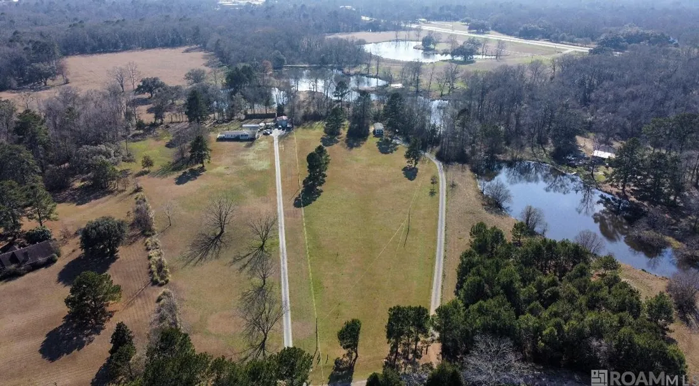
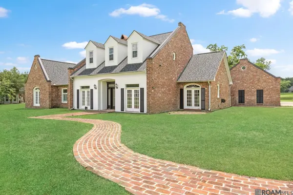
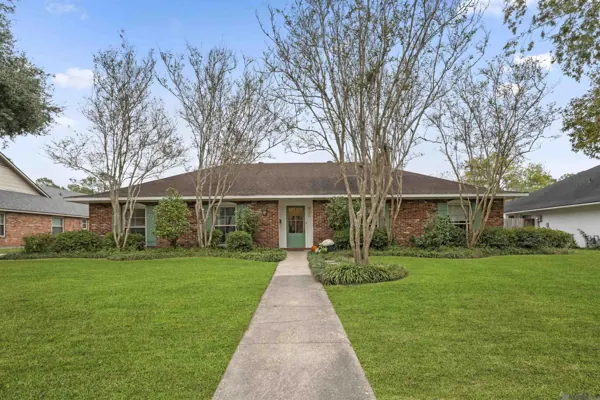
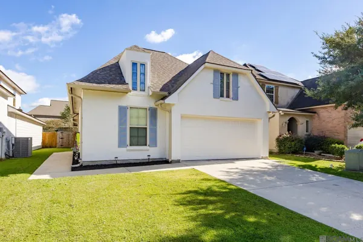

Communities
Decide where,then decide which.
The places I work, from the river parishes to the Felicianas, and what living near golf really means in each one.
Trails End Road, St. Francisville
Sold by Caleb
Start with a place
Six areas, all somewhere I've closed homes.
Each opens the search there, with the map, the flood zones and the golf courses around it. Every photograph is a home I've sold or listed.


ZacharyCopper Mill, lake lots, the quiet streets off 19
Baton RougeGarden District to Central New Roads & False RiverWaterfront, an hour from the city
New Roads & False RiverWaterfront, an hour from the city
Prairieville & AscensionGrowing fast, Pelican Point close by Denham Springs & the west bankLivingston Parish, Port Allen, Brusly
Denham Springs & the west bankLivingston Parish, Port Allen, Brusly

Golf
Near a course is not the same as on it.
Listings blur four different things. Knowing which one you're buying changes the price, the dues and the view out the window.
- Golf frontage
The lot touches the course. Views, foot traffic and the occasional ball. Usually the premium, usually the most restrictions.
- A course view
You can see the course from the house, often from a second floor or across a street. Turnberry in Copper Mill is this, not frontage.
- Inside a golf community
You live within the development. Golf may or may not come with the HOA. Ask exactly what dues include before you count it.
- Nearby
A public or semi-private course within a few miles. No privileges, no dues, no premium. The search marks these as straight-line distance.
Three golf communities, researched
Copper Mill, Santa Maria, Pelican Point.
Research pilot with sources on every fact.
Homes within 3 miles of a courseFull golf finderCompare two communities
Ask a local
Tell me where you're leaning.
Send me an area, a budget, or just a question. I'll tell you what I'd look at first.